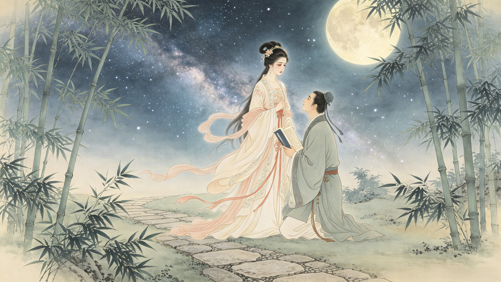

Divine Lineage
The celestial bloodline, a mother's imprisonment, and the master who forged a warrior.
**Erlang Shen** (Yang Jian) was born to a mortal scholar father and the Jade Emperor's sister, Princess Yunhua. When his mother was imprisoned under Peach Mountain for the crime of marrying a mortal, young Yang Jian split the mountain open with his axe to free her — a filial act that made him a folk hero and earned his place as heaven's most trusted general.
Yunhua was the Jade Emperor's sister — a celestial princess of the highest court. Yang Tianyou was a mortal scholar, gentle and good. When they fell in love and married in secret, the Jade Emperor's wrath was absolute. He imprisoned his own sister beneath Mount Tai for the crime of loving a mortal. She bore three children in captivity, the second of whom was Erlang Shen. The child inherited his father's humanity and his mother's divine blood — a fusion that would make him something unprecedented in the celestial order: a god who understood what it meant to be mortal.

As a young man, Erlang Shen split Mount Tai with a single stroke of his axe and freed his mother. With his younger sister, the Holy Mother of Hua Shan, he carried Yunhua to safety. But the act of defiance against the Jade Emperor could not go unanswered. Instead of submitting, Erlang Shen carved out his own domain — Guanjiangkou, at the mouth of the Guan River — and declared himself answerable to no celestial bureaucrat. He would serve heaven on his own terms: as a warrior, not a courtier. The Jade Emperor, impressed despite himself, granted his nephew the title of Erlang Shen — "The Illustrious Sage of the Second Order."
Before he could face heaven, Erlang Shen needed a teacher. Yuding Zhenren — one of the Twelve Golden Immortals of the Jade Void Palace — took the young half-divine warrior as his disciple. Under Yuding's tutelage, Erlang Shen mastered the Seventy-Two Earthly Transformations (the same art later taught to Sun Wukong by Patriarch Subodhi), the sacred combat forms of the celestial armies, and the awakening of his third eye — the Heavenly Eye that sees through all illusion. Yuding gave him the Three-Pointed Double-Edged Spear, a weapon forged in the foundries of the Jade Void itself. When Erlang Shen descended from his master's mountain, he was no longer a refugee prince seeking vengeance. He was a general.
Dive Deeper